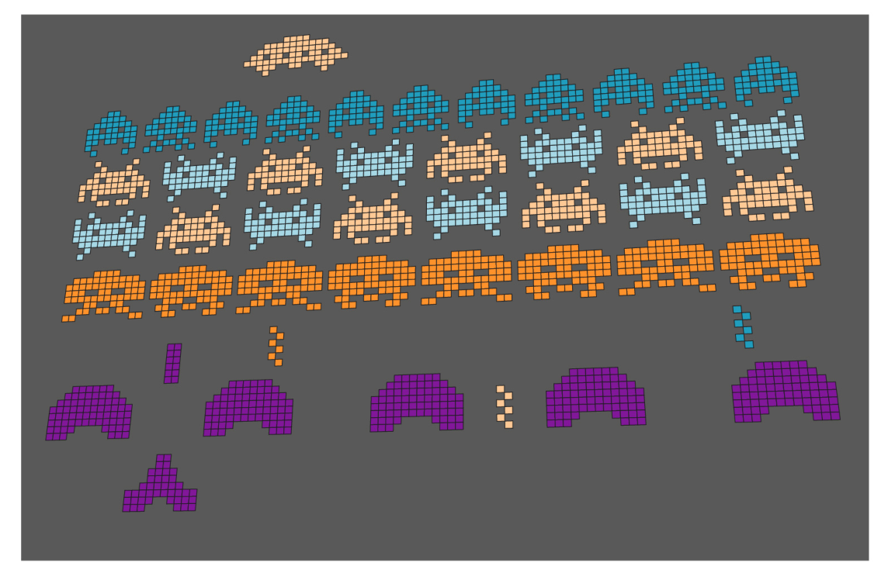
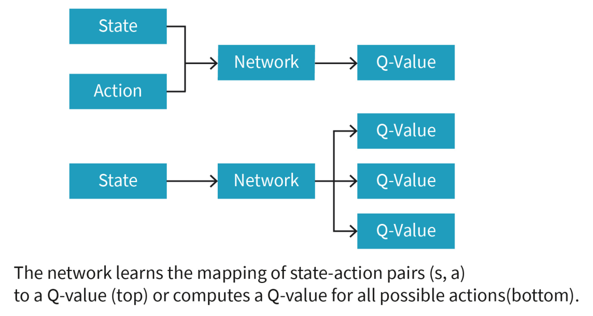

DLMAIRIL01 - Source-derived printable review sheet
Condensed from the same learning note. No additional teaching topics or official examination questions. Formulas and fonts render offline.
A DQN approximates Q-values with learned parameters and features, avoiding independent storage of every state-action value; its bootstrapped, evolving target creates stability problems addressed by later methods.
| Term | Meaning |
|---|---|
| Q approximation | A function with parameters representing action values. |
| Features | Input information used by the approximate value model. |
| DQN | A deep neural network approximating the Q-function. |
| Network parameters | Weights and other learned quantities denoted theta. |
| Training target | Sampled reward plus discounted estimated successor value. |
| Squared-error loss | Squared difference between target and prediction. |
Compare a state-action input with one Q output against a state input with multiple action-Q outputs. Network approximation replaces storage of independent table entries.
The source Atari setup uses pixel images as states and convolutional layers to learn image features before outputting values for the available game actions. Its architecture figure contrasts one state-action-to-value mapping with a state-to-all-action-values mapping.
Study these with the detailed explanation in the linked Obsidian note.


Answer before expanding. Open the answers before printing to include them.
The number of possible state-action pairs and sparsity of repeat visits become too large.
The learned parameters of the approximate value function.
Convolutional layers learn them from input images.
State plus action to one Q-value, or state to Q-values for all represented actions.
Reward plus discounted maximum next-state Q estimate.
It depends on the network's evolving estimates of future values.
Changes in predictions also change training targets and can disturb earlier learning.
Learning note: 04_unit_4_q_learning/02_reinforcement_learning_with_neural_networks_and_deep_q_learning.
Course book pp. 150-153. Printed page + 2 = PDF viewer page. Personal-study use.